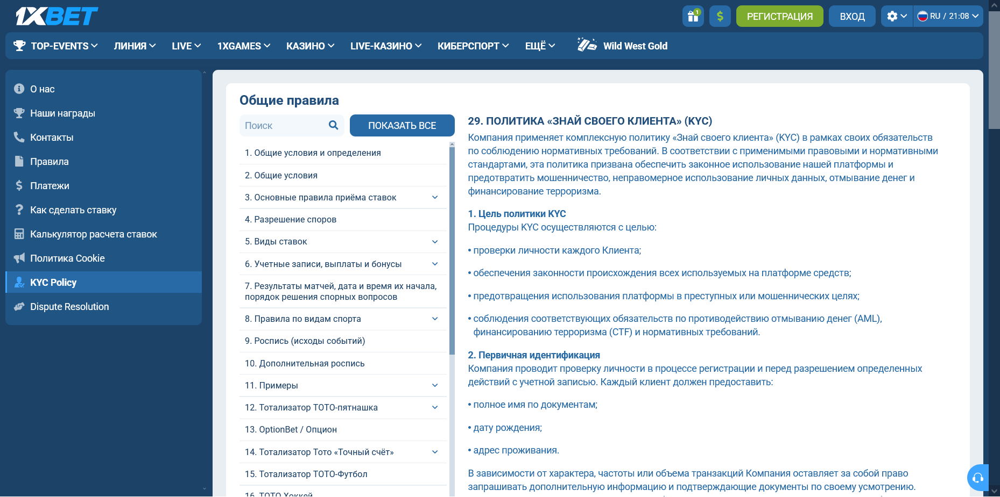

Как пройти верификацию 1xBet: документы по правилам KYC
Для аккаунта 1xBet верификация — проверка личности по политике «Знай своего клиента» (KYC). В правилах на указанном пользователем зеркале, открытых 3 октября 2026 года, для первичной проверки названы 3 сведения: полное имя по документам, дата рождения и адрес проживания. Дополнительные документы оператор запрашивает индивидуально, поэтому перечень и канал подачи берите из уведомления в своём аккаунте.
Что означает запрос на верификацию
Уведомление о верификации 1xBet может относиться к данным учётной записи, платёжному средству или конкретной операции. Верификация 1xBet в политике KYC (раздел 29 общих правил на просмотренном зеркале) разделена на 3 уровня: первичную идентификацию при регистрации, усиленную проверку по отдельным поводам и постоянный контроль учётной записи.
Номер, дату и точную формулировку уведомления 1xBet сохраните сразу: по одной фразе «пройдите верификацию» нельзя установить основание запроса. Срок ответа зависит от вида запроса: документы при выводе правила требуют прислать не позднее 1 месяца, а саму проверку файлов оценивают в срок до 72 часов.

Повторная верификация 1xBet по пункту 4 политики проводится при значительном изменении персональной информации — например, адреса, способа оплаты или юрисдикции. Повторный запрос сам по себе не доказывает нарушение. Выясните, что именно требуется повторно, какая предыдущая отправка была получена и почему её не приняли.
Когда букмекер запрашивает дополнительную проверку
Усиленная идентификация в 1xBet, по пункту 3 политики KYC, возможна при 5 условиях. Список пересказывает правила зеркала от 3 октября 2026 года; верификация конкретного аккаунта опирается только на повод, указанный в уведомлении.
- Совокупные депозиты, вывод средств или операции достигли определённого лимита — сам лимит в правилах не назван.
- В учётной записи обнаружена необычная или подозрительная активность.
- Клиент проживает или проводит операции в юрисдикции с высоким уровнем риска.
- Есть признаки подделки личности или использования платёжных средств третьих лиц.
- Клиент относится к публичным должностным лицам (PEP) или связан с подсанкционной организацией.
По таким поводам букмекер вправе запросить документы об источнике средств, дополнительные удостоверения личности, историю операций или банковскую информацию. Пункт 2 политики 1xBet при сомнениях допускает нотариально заверенные документы, биометрическую верификацию и поиск по базам данных. Проверка платежей через платёжную систему, по пункту 6.2 правил счёта, у некоторых систем может длиться до 180 дней.
Какие документы нужны для проверки
Верификация 1xBet не опирается на универсальный список документов: правила называют виды сведений, а конкретный набор указывает индивидуальный запрос. Таблица сводит упоминания документов из 3 разделов правил зеркала по состоянию на 3 октября 2026 года.
| Пункт правил | Что может потребоваться | Когда |
|---|---|---|
| Политика KYC, п. 2 | Имя по документам, дата рождения, адрес | Первичная проверка при регистрации |
| Политика KYC, п. 3 | Источник средств, история операций, банковские данные | Усиленная проверка |
| Правила счёта, п. 6.1 | Видеозвонок или видеозапись с документами | Решение службы безопасности |
| Правила счёта, п. 6.2 | Паспорт или водительское удостоверение, документ о способе оплаты | Заявка на вывод; срок — 1 месяц |
| Правила счёта, п. 6.3 | Фото с удостоверением в руках, проверка по телефону | Бонусные акции |
Требования 1xBet к качеству файлов в пункте 2 политики сформулированы общими словами: документы должны быть чёткими, действительными, неизменёнными и поддающимися проверке. Идентификация по снимку, изменённому программами или графическими редакторами, по пункту 6.1 правил счёта считается поводом для расследования, поэтому присылайте исходный снимок без ретуши.
| Поле запроса | Контрольный вопрос |
|---|---|
| Вид сведений | Какие именно данные нужно подтвердить? |
| Формат | Какой файл, качество и срок актуальности требуются? |
| Канал | Находится ли форма внутри проверенного аккаунта? |
| Срок | Есть ли указанный в уведомлении дедлайн? |
| Статус | Где появится подтверждение получения? |
Документы для 1xBet не загружайте на bonusbk.xyz: этот сайт не принимает и не проверяет личные данные пользователей букмекера.
Сколько длится верификация по правилам
Верификация 1xBet по правилам зеркала, открытым 3 октября 2026 года в сессии с географией Сейшелы/SCR, длится до 72 часов с момента получения документов; видеоматериалы проверяют дольше. Для аккаунта из Москвы эти значения не подтверждены, поэтому ориентир из таблицы сверяйте с уведомлением и ответом поддержки.
| Этап | Срок в правилах | Пункт |
|---|---|---|
| Проверка присланных файлов | До 72 часов с момента получения | 6.1 |
| Итог видеозвонка | 5 рабочих дней после звонка | 6.1 |
| Проверка видеоматериалов | До 14 рабочих дней | 6.1 |
| Неявка на видеозвонок | 30 календарных дней, затем возможна блокировка и расчёт ставок с коэффициентом 1.0 | 6.1 |
| Проверка платежей | До 180 дней у некоторых систем | 6.2 |
| Файлы по запросу при выводе | Не более 1 месяца с момента запроса | 6.2 |
Пример расчёта на условных датах: файлы для проверки 1xBet получены 6 октября в 10:00 — предел 72 часов наступает 9 октября в 10:00. Срок отсчитывается от получения файлов оператором, а не от момента съёмки, поэтому сохраните подтверждение получения.
Ограничение функций учётной записи 1xBet на время проверки допускает пункт 4 политики KYC. Состояние уже созданной заявки на выплату разбирайте отдельно: этапы и статусы описаны в материале о том, что делать, когда вывод не проходит.
Почему верификация не проходит
Верификация 1xBet, по правилам, не проходит из-за проблем с качеством и достоверностью данных. Пункт 6.1 правил счёта и пункт 2 политики KYC называют такие основания для повторного запроса или расследования:
- файл нечёткий, недействительный или изменён в графическом редакторе;
- данные профиля расходятся с документом: имя, адрес, реквизиты карты;
- учётная запись открыта на чужие документы или персональные данные другого лица;
- пополнение шло с карты или кошелька третьего лица, хотя платёжные инструменты должны быть зарегистрированы на имя клиента;
- повторная регистрация: правила допускают 1 учётную запись на клиента, семью, адрес, IP-адрес и платёжное средство.
Последствия для аккаунта 1xBet при отказе предоставить сведения пункт 5 политики перечисляет в 4 мерах: приостановка или ограничение доступа, заморозка депозитов, вывода или игры, прекращение отношений с клиентом и сообщение регулирующим или следственным органам.
Букмекер 1xBet при этом указывает, что не несёт ответственности за задержки, вызванные такими мерами. Непредоставление документов при выводе в течение 1 месяца после запроса, по пункту 6.2, может приостановить выплату, а средства — быть конфискованы.
Правила счёта 1xBet упоминают компетентный орган Кюрасао: остаток на учётной записи, открытой на чужие паспортные данные, оператор вправе удержать, если выплату не предписывает закон или решение этого органа.
Как безопасно передать данные
- Для передачи файлов в 1xBet откройте нужный сайт или приложение самостоятельно, без перехода по ссылке из сообщения.
- Проверьте адрес и раздел аккаунта, где отображается запрос.
- Сверьте перечень файлов с индивидуальным уведомлением.
- Передайте только запрошенные сведения через подтверждённый канал.
- Сохраните номер обращения, время отправки и статус получения.
Письмо от «службы безопасности» 1xBet с требованием ответить паспортом на неизвестный адрес сначала сверьте с запросом внутри аккаунта.
Файлы, запрошенные 1xBet при выводе, отправьте не позднее 1 месяца с момента запроса — так сказано в пункте 6.2 правил счёта. Пароль и одноразовый код из 1xBet нельзя передавать собеседнику: правила счёта прямо запрещают раскрывать третьим лицам коды для вывода средств и смены номера телефона.
Как отследить статус и причину отказа
Статус верификации 1xBet проверяйте в том канале, где подавали данные, и записывайте изменения. Срок без индивидуального ответа сверяйте с таблицей правил выше, а по истечении 72 часов запросите у поддержки обновление по номеру обращения. Видеоматериалы правила разрешают проверять до 14 рабочих дней — с учётом выходных это почти 3 недели.
| Дата и время | Номер запроса | Статус | Что получено в ответ |
|---|---|---|---|
| Заполнить по факту | Номер из уведомления | Дословный текст | Пункт правил или список исправлений |
Отклонённый файл не загружайте повторно вслепую. Сравните сообщение с требованиями к формату, читаемости и совпадению данных и запросите точную причину отклонения.
Частые вопросы о верификации
Можно ли вывести деньги до окончания проверки?
Вывод во время проверки 1xBet зависит от статуса аккаунта: пункт 4 политики KYC допускает ограничение функций до завершения процедуры. Выясните, создана ли заявка и какой статус ей присвоен.
Почему запросили документы повторно?
Повторная верификация по правилам 1xBet связана со сменой адреса, способа оплаты или юрисдикции либо с непринятым файлом. Уточните, какие сведения отсутствуют, — повторная загрузка того же файла без объяснения может не решить проблему.
Сколько длится 1xBet верификация документов?
Проверка файлов в 1xBet по правилам зеркала на 3 октября 2026 года занимает до 72 часов с момента получения, видеоматериалов — до 14 рабочих дней. Для аккаунта из Москвы срок не подтверждён.
Обязательна ли проверка для каждого игрока?
Первичная идентификация по пункту 2 политики 1xBet проводится при регистрации и перед отдельными действиями с учётной записью. Дополнительные документы букмекер запрашивает по своему усмотрению.
Источники и ограничения
Материал о верификации 1xBet опирается на 2 страницы правил, открытых 3 октября 2026 года на указанном пользователем зеркале в сессии с географией Сейшелы/SCR, и на SERP-пакет октября 2026 года; требования к аккаунту из Москвы и индивидуальные сроки не проверены. Первоисточники: политика KYC (раздел 29) и правила аккаунта (раздел 6). Правовой контекст: сообщение ФНС.